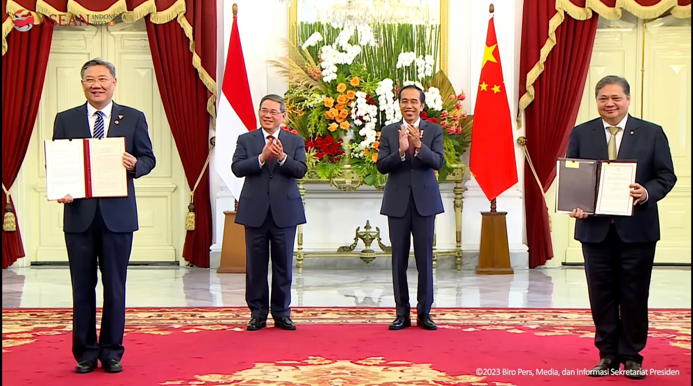

.png)

Kerjasama: Indonesia dan Republik Tiongkok Sepakati Kerjasama di Bidang Ekonomi Digital (12 September 2023)
Tujuan: Meningkatkan perekonomian Indonesia dengan bantu kerjasama Tiongkok
Kasus: Di kota Guiyang, Tiongkok Selatan, pada 5 Juni 2021 dalam pertemuan Menu Tiongkok, Wang Yi dengan Menko Marves Luhut Binsar Pandjaitan sepakat kerjasama yang sudah berlangsung selama 8 tahun sebelumnya dengan mekanisme Troika (Bidang Politik, ekonomi, dan komunikasi) dimana ini ditingkatkan dan diperluas lebih progresif lagi dengan mekanisme kendaraan bermotor bergandar ganda atau disebut sebagai 4WD dengan tingkat saling percaya dan menguntungkan antara dua negara tersebut. Mekanisme 4WD merupakan ibarat mobil dengan mekanisme mesin perekonomiannya type 4WD (four wheel drive) dimana semua roda perekonomian yang digerakkan bisa diatur sesuai kesepakatan antara 2 pemimpin negara baik dalam situasi perekonomian domestik dan global yang normal maupun abnormal. Dari sistem Troika menuju mekanisme 4WD ini Indonesia dan Tiongkok diharapkan mampu bersinergi bersama mencapai tujuan bersama dan dunia.